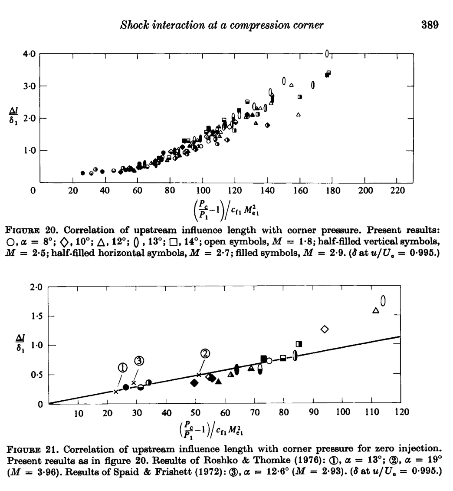
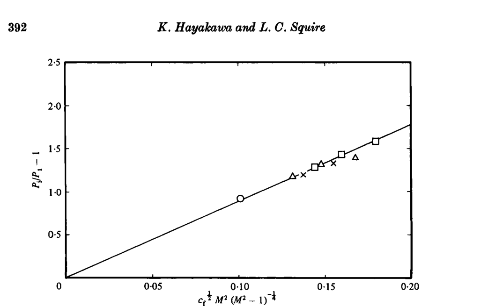

01中文摘要
多数压缩拐角激波/边界层干扰实验的上游边界层在零压力梯度下发展，而实际流动常处于非平衡态。本文用多孔壁吹气扰动拐角上游边界层，实验研究其对干扰的影响，结果直接关系到发汗冷却表面设计，也可类比上游等熵压缩的影响。试验马赫数1.8、2.6、2.7、2.9，拐角8°、10°、12°、13°、14°。吹气使边界层型线更不饱满、形状因子增大、摩阻降低；上游影响长度显著增大，但拐角压力几乎与吹气率无关；起始分离角随型线不饱满度增大而减小；起始分离总压升近似与当地摩阻系数的平方根成正比。
原始摘要（英文/原文）
In most experimental studies of the shock-wave/boundary-layer interaction at a compression corner the boundary layer upstream of the interaction has developed in zero-pressure-gradient conditions. However, in many practical situations the boundary layer upstream of the interaction is subject to adverse or favourable pressure gradients, and hence is in a non-equilibrium state. This paper presents the results of a series of experiments on the interaction at a compression corner where the boundary layer upstream of the corner is disturbed by air injected through a porous surface. The results are thus of direct interest to the design of transpiration-cooled aerodynamic surfaces. However, the boundary-layer profiles upstream of the interaction also have many similarities to those in an adverse pressure gradient, so that the results also give some indication of the effects of an isentropic compression upstream of the interaction. The results are used to discuss existing correlations for upstream influence and to study conditions for incipient separation. The experiments were made at Mach numbers of 1·8, 2·6, 2·7 and 2·9, with corner angles of 8°, 10°, 12°, 13° and 14°.
02阅读说明
实验研究类期刊论文（J. Fluid Mech. 122 (1982), 369–394，26页）。bundle 提供带页码全文与3项图件（表1、图20、图24）；扫描版双栏OCR错乱严重，公式、图号与M=2.5/2.6多处混读，已回读PDF第371、385、386、387、388、389页核对式(1)–(6)、图15–图21。工况、几何、测量方法与主要定量结论在正文中交代较全；其余图（2–19、21–23）无裁剪图，只能依据正文描述与图注文字，读图精度受限。 文章类型：期刊
03一句话核心与三句话摘要
多孔壁吹气使上游边界层变瘦后，压缩拐角干扰的上游影响长度大增而拐角压力几乎不变。
- 多数激波/边界层干扰研究针对零压梯度平衡边界层，而实际流动常处于非平衡态；Squire & Smith的入射激波实验又受侧壁三维性困扰，上游边界层状态对干扰的影响尚未厘清。 AI概括
- 作者在M=1.8–2.9、拐角8°–14°、6种吹气率下测量压力分布、边界层与油流，发现上游影响长度随拐角增大3–4倍、随最高吹气率增大约4倍，而拐角压力几乎与吹气率和马赫数无关，起始分离角随上游形状因子Hi增大而减小。 AI概括
- 作者提出以(Pc/P1−1)/(cf1·Mδ1²)为坐标的上游影响相关式，零吹气时系数为9.5×10⁻³，并指出Roshko–Thomke相关式只适用于绝热平板、M>3的相对高雷诺数条件。 AI概括
04核心内容清单
| 要点 | 类型 | 重要性 | 原文依据 | 属性 |
|---|---|---|---|---|
| 用多孔壁吹气在压缩拐角上游制造非平衡边界层，可在同一风洞内连续改变速度型饱满度、Hi与cf，避免改变壁面曲率带来的堵塞问题。 | 实验方法 | A | p369–371 §1–2，图1 | 原文明确 |
| 来流边界层完全湍流：无吹气时θ≈0.5 mm、Reθ≈2×10^4；Hi由约1.35升至最高吹气率的约1.6。 | 来流状态 | A | p373–374 §3.1 | 原文明确 |
| 二维性经中心线/偏中心线压力和油流条纹检验，仅侧壁约7%展向存在三维效应，主干扰区可视为二维。 | 实验质量 | A | p375–376 §3.2，图7、图14 | 原文明确 |
| 所有工况压力均在拐角上游开始上升；上游影响长度随吹气率与拐角角增大，拐角由最小到最大增大约3–4倍，最高吹气率相对零吹气增大约4倍。 | 核心结果 | A | p378 §3.3，图8、图9 | 原文明确 |
| 除α=8°外，拐角压力几乎与吹气率无关，且在不同马赫数下近似相同（作者称可能为巧合）；Pc/Pinv随M与拐角角增大而下降。 | 核心结果 | A | p379–380 §3.3，图10、图11 | 原文明确 |
| 无吹气时激波在拐角附近产生且很薄；吹气率或拐角增大使激波脚向上游移动，近壁压缩波近乎垂直于壁面。 | 流动显示 | B | p380–381 §3.4，图12、图13 | 原文明确 |
| Δl/δ1随吹气率增大；用声速层厚度标度不能使数据重合，说明亚声速层增厚不足以单独解释上游影响增长。 | 结果/否证 | A | p385–386 §4.1，图16、图17 | 原文明确 |
| Roshko–Thomke相关式与本文趋势相反：cf减小时Δl/δ1反而增大；该式只适用于绝热平板、M>3的相对高雷诺数条件。 | 相关式检验 | A | p386–387 §4.1，图18、图19，式(2) | 原文明确 |
| 由近壁边界层方程与Chapman量级分析得Δl/δ1∝((Pc/P1)−1)/(cf1·Mδ1²)，零吹气拟合系数9.5×10^-3；该坐标可相关所有M、α与吹气率。 | 理论/相关式 | A | p387–389 §4.1，式(3)–(6)，图20、图21 | 原文明确 |
| 起始分离拐角角随Hi增大显著下降，所有马赫数在α–Hi图上收拢为窄带；起始分离总压升与cf1的平方根成正比。 | 核心结论 | A | p390–392 §4.2，图23、图24 | 原文明确 |
| 起始分离的吹气率扫描未发现迟滞；激波有轻微抖动，但幅度小到无法从火花照片测量。 | 实验观察 | C | p383–384 §3.4–3.5 | 原文明确 |
| 本文结果与Squire & Smith“起始分离激波强度与上游边界层形状无关”的结论不一致：拐角角表示的起始分离条件明显依赖Hi。 | 与既有研究对比 | A | p370 §1；p390–391 §4.2；p392–393 §5 | AI概括 |
05引言：研究问题与领域缺口
超声速/高超声速飞行器与叶轮机中存在大量激波-边界层干扰，分离与起始分离条件仍未完全理解。已有研究绝大多数针对零压梯度下发展的平衡湍流边界层，但实际翼型、控制面铰链等处的边界层在遇到激波前已受顺压或逆压梯度作用，处于非平衡态。Squire & Smith（1980）用多孔壁吹气改变上游边界层形状，发现起始分离所需激波强度几乎与边界层形状无关，但干扰尺度随吹气率迅速增大；其入射斜激波装置受侧壁三维性影响。本文改用不同倾角的压缩拐角以避免该问题，系统研究M=1.8、2.5、2.7、2.9，拐角8°、10°、12°、13°、14°与6种吹气率下上游边界层状态对上游影响长度、拐角压力与起始分离的影响，并检验既有相关式（p369–370，§1）。
06流动条件与几何构型
| 项目 | 数值/描述 | 依据 | 备注 |
|---|---|---|---|
| 风洞 | 剑桥大学工程系间歇式超声速风洞，运行约60 s；原入射激波发生器拆除，改装压缩拐角模型 | p370 §2 | |
| 模型几何 | 多孔板长277 mm，实心板长58.8 mm，压缩拐角位于多孔/实心板接缝下游47.2 mm，展向114 mm | p371 §2，图1 | |
| 马赫数 | M∞=1.8、2.5、2.7、2.9 | p370 §2 | |
| 单位雷诺数 | 3.8×10^7、3.8×10^7、4.0×10^7、4.1×10^7 m⁻¹（依次对应M=1.8、2.5、2.7、2.9） | p370 §2 | |
| 拐角角 | 8°、10°、12°、13°、14° | p370 §2 | |
| 吹气参数 | FP=0、1、2、3、4、5，共6种；FP=0为无吹气 | p370 §2；p371 表1 | |
| 实际吹气率 | ρwVw/ρeUe：M=1.8约0–0.0027；M=2.5约0–0.0038；M=2.7约0–0.0036；M=2.9约0–0.0039（表1） | p371 表1 | |
| 来流边界层 | 完全湍流；无吹气时角点前θ≈0.5 mm、Reθ≈2×10^4；δ按u/Ue=0.996定义 | p373–374 §3.1 | |
| 形状因子 | 无吹气Hi≈1.35；最高吹气率下角点处约1.6（不可压缩形状因子） | p373 §3.1，图4 | |
| 摩阻 | X=47.2 mm处最高吹气率使cf降为无吹气值的约26%（M=1.8）与45–60%（M=2.5、2.7、2.9） | p374 §3.1，图5 | |
| 壁温条件 | 温度剖面未测；Tw/Tr在1.05–1.01间变化（总温升约5 °C、壁温降约5 °C）；按式(1)由速度比推温度 | p372 §2 | |
| 二维性 | 中心线与±20 mm处压力几乎相同；油流分离线在大部分展向平直；仅侧壁约7%展向有三维效应 | p375–376 §3.2，图7、图14 | |
| 模型长度 | 楔长大于最厚来流边界层的8倍（FP=5、M=2.9）；M=2.6、α=13°时楔长由100 mm减至50 mm，压力分布与上游影响不变 | p380 §3.3 | |
| 测压 | 模型中心线与偏中心线静压孔；压力以干扰前p1归一化 | p377–378 §3.3 | |
| 边界层测量 | 扁平Pitot管测速度剖面；圆形Preston管测cf，用Bradshaw & Unsworth（1973）标定 | p371 §2 | |
| 流动显示 | 纹影、阴影、TiO2油流、油bleed法（Smith 1977） | p370–371 §2；p383 §3.5 | |
| 起始分离判据 | 六种方法：油流、压力分布拐点、压力-拐角角折点、单楔/双楔转折、分离激波外推、Δl-拐角角折点；后四种无明确指示，主要用拐点法与油bleed法 | p390 §4.2 | |
| 迟滞检查 | 每个拐角角连续降低再升高吹气率，未发现明显迟滞 | p383 §3.5 | |
| 非定常性 | 激波轻微抖动，但幅度小到无法从火花照片测量 | p383–384 §3.4 |
07核心现象与关键参数
| 参数 | 定义 | 数值 | 关系/说明 | 依据 |
|---|---|---|---|---|
| Δl | 上游影响长度：最大压力升斜率与x轴交点至拐角的距离（Settles & Bogdonoff） | 随M、α、FP变化；无单一数值 | p384–385 §4.1，图15 | |
| Δl/δ1 | 以角点处边界层厚度无量纲化的上游影响长度 | 图16：随拐角角与吹气率单调增大 | p385 §4.1，图16 | |
| 上游影响增幅（拐角） | 最小到最大拐角角引起的Δl变化 | 约3–4倍 | p378 §3.3 | |
| 上游影响增幅（吹气） | 最高吹气率相对零吹气的Δl变化 | 约4倍 | p378 §3.3 | |
| Pc/P1 | 拐角处静压与干扰前静压之比 | 除α=8°外几乎与吹气率无关；随α增大而增大 | p379 §3.3，图10 | |
| Pc/Pinv | 实测拐角压力与无黏理论压力之比 | 随M与α增大近似线性下降 | p379–380 §3.3，图11 | |
| Hi | 不可压缩形状因子 | 无吹气≈1.35；最高吹气率≈1.6 | p373 §3.1，图4 | |
| cf1 | 干扰起始处、无激波但对应吹气率下的壁面摩阻系数 | 随吹气率增大而显著下降（最高吹气约为无吹气的26%–60%） | p374 §3.1；p388 §4.1 | |
| Mδ1 | 干扰起始处的边界层边缘马赫数 | 等于各试验M∞（1.8–2.9） | p388 §4.1，式(5) | |
| 声速点速度比 | 绝热壁下u/Ue的声速点位置 | M=1.8约0.64；M=2.9约0.51 | p386 §4.1 | |
| 新相关式系数 | 零吹气拟合Δl/δ1=9.5×10^-3·((Pc/P1)−1)/(cf1Mδ1²)的系数 | 9.5×10^-3 | p389 §4.1，式(6)，图21 | |
| 油流第一堆积线压力 | TiO2油流远端堆积线A对应的压力升 | 约1.57P1（Chapman等为1.3±0.1P1） | p383 §3.5 | |
| 起始分离角（M=1.8） | 油bleed法观测到起始分离的拐角角 | 仅13°（最高试验角）出现 | p391 §4.2，图23 | |
| 起始分离压升标度 | 总压升与cf1的关系 | ∝cf1^1/2；各M数据在cf^1/2·Mδ组合坐标下共线 | p392 §4.2，图24 |
08方法与数据
实验在剑桥大学工程系间歇式超声速风洞进行，运行约60 s。模型由多孔板（长277 mm）、实心板（长58.8 mm）与可换压缩拐角组成，拐角位于多孔/实心板接缝下游47.2 mm，展向114 mm；多孔板下游接静压腔，以受控流量吹入空气改变边界层。马赫数1.8、2.5、2.7、2.9对应单位雷诺数3.8×10^7、3.8×10^7、4.0×10^7、4.1×10^7 m⁻¹；每个马赫数用6种吹气率FP=0–5（表1），拐角8°、10°、12°、13°、14°。测量包括模型中心线与偏中心线静压、无拐角时的扁平Pitot边界层剖面、Preston管摩阻（Bradshaw & Unsworth 1973标定）、纹影与阴影、二氧化钛油流以及Smith（1977）油 bleed 法。温度剖面未测，按式(1)由壁温Tw、恢复温度Tr与自由流静温Te和速度比关联；运行中总温升高约5 °C、壁温下降约5 °C，Tw/Tr在1.05–1.01之间。二维性用中心线与±20 mm压力分布、油流条纹检查；模型长度大于最厚边界层的8倍，M=2.6、13°时楔长由100 mm减到50 mm结果不变（p370–372，§2；p380，§3.3）。
| 项目 | 内容 | 依据 | 备注 |
|---|---|---|---|
| 实验类型 | 风洞实验：压缩拐角激波-边界层干扰，上游边界层由多孔壁吹气扰动 | p370 §2 | |
| 来流控制 | M=1.8/2.5/2.7/2.9；单位Re=(3.8–4.1)×10^7 m⁻¹；间歇式风洞约60 s | p370 §2 | |
| 边界层扰动方式 | 经多孔板向边界层吹气，FP=0–5；吹气改变速度型饱满度、Hi与cf，模拟逆压梯度效果 | p370–371 §2 | |
| 压力测量 | 中心线与±20 mm偏中心线静压孔，p/p1分布；用于定义Δl与Pc/P1 | p377–378 §3.3 | |
| 边界层测量 | 扁平Pitot管速度剖面；Preston管摩阻（Bradshaw & Unsworth 1973） | p371 §2 | |
| 温度处理 | 未测温度剖面；按式(1)用Tw、Tr、Te与u/Ue关联，瞬时值代入 | p371–372 §2 | |
| 流动显示 | 纹影、阴影、TiO2/油/油酸混合油流、油bleed法 | p370–371 §2；p383 §3.5 | |
| 二维性检验 | 中心线与偏中心线压力对比；油流条纹与分离线平直度；侧壁三维区约占7%展向 | p375–376 §3.2 | |
| 起始分离判定 | 六种判据并用；以压力分布拐点法与油bleed法为主，TiO2油流辅助；升降吹气率检查迟滞 | p390–391 §4.2 | |
| 数据无量纲化 | Δl以角点处δ1归一化；另用声速层厚度、cf1、Pc/P1与Mδ1组合标度 | p384–389 §4.1 | |
| 误差来源 | Preston管标定与压缩性修正；Tw/Tr随运行漂移；压力孔间距影响拐点识别；油bleed法灵敏但难定量 | p372 §2；p390–391 §4.2 | |
| 对照数据 | Roshko & Thomke（1976）、Law（1974）、Settles等（1976）、Spaid & Frishett（1972）的零吹气/平板数据 | p386–389 §4.1，图19、图21 |
09核心推导与公式
从近壁边界层动量方程出发，用Chapman的壁面剪应力尺度作量级分析，把上游影响长度与拐角压升、干扰起始处摩阻和边界层厚度联系起来；再以½γp1Mδ1²无量纲化，得到可直接相关实验数据的标度式，最后用零吹气数据定系数。
关键假设
- 二维、定常流动
- 近壁处速度与流动加速度很小，动量方程退化为dP/dx=∂τ/∂y
- 以干扰起始处的壁面剪应力τw1代表近壁剪切应力（Chapman等1958）
- 上游影响长度按最大压力梯度斜率与x轴交点定义（Settles & Bogdonoff 1973）
- 给定拐角角下拐角压力Pc与吹气率无关，可用Pc/P1作标度
- 绝热壁条件用于声速点位置与边界层参数
- 边界层完全湍流，干扰起始处cf1与Mδ1可独立测得
推导过程
把压力开始上升、最大压力梯度斜率与x轴的交点到拐角的距离定义为上游影响长度Δl，并按角点处边界层厚度δ1无量纲化。这是后续所有相关式的因变量。
在速度与加速度很小的近壁区，对流项可忽略，压力梯度由剪应力梯度平衡；这是把压升与壁面剪切联系起来的起点。
把∂P/∂x近似为(Pc−P1)/Δl、∂τ/∂y近似为τw1/δ1，得到压升、上游影响长度与壁面剪应力的比例关系。
两边同除以½γp1Mδ1²，并用cf1=τw1/(½ρeUe²)与完全气体关系把τw1/δ1化为cf1Mδ1²，得到上游影响长度的标度式。
以图21的零吹气数据拟合比例系数，得到定量相关式；图20显示该坐标对全部马赫数、拐角角与吹气率给出合理相关，Δl仅在Pc/P1→1时趋于零。
适用边界：推导只做量级分析，不是严格解；系数9.5×10^-3由本文零吹气数据拟合，依赖本实验的雷诺数范围与测量方法。式(6)需要预先知道拐角压力Pc，而Pc并非常规可预测量；作者建议用图10/图11的经验关系或Rosen等（1980）的积分方法估算。含分离流数据时图20有散布并偏离线性；Roshko–Thomke相关式不适用于本文的非绝热/非平板/低马赫数条件。近壁假设（速度与加速度小）在强分离区可能失效。
10结果：主要发现与关键证据
来流边界层：随吹气率增大速度型变瘦、尾迹分量增强，δ（u/Ue=0.996）沿程增厚；无吹气时Hi≈1.35，最高吹气率下角点处约1.6；X=47.2 mm处最高吹气使cf降至无吹气值的约26%（M=1.8）与45–60%（M=2.5–2.9）；θ≈0.5 mm、Reθ≈2×10^4，边界层完全湍流。二维性：中心线与±20 mm压力几乎重合，油流分离线在大部分展向平直，仅侧壁约7%展向有三维效应，判定二维性满意（p372–376，§3.1–3.2，图2–7、14）。压力分布：所有工况压力均在拐角上游开始上升；上游影响随吹气率与拐角角增大，拐角由最小到最大使上游影响增大约3–4倍，最高吹气率相对零吹气增大约4倍；M=2.9、α=13°/14°最高吹气时压力上升起点已位于多孔/实心板接缝上游。除α=8°外，各拐角处压力几乎与吹气率无关；图10显示拐角压力在不同马赫数下也近乎相同（作者称可能属巧合）。Pc/Pinv随马赫数下降、随拐角角近似线性下降（p377–380，§3.3，图8–11）。纹影/阴影：无吹气时激波在拐角附近产生且很薄；吹气率和/或拐角增大使激波向上游移动；近壁压缩波近乎垂直于壁面，高吹气率下在更大比例的边界层厚度内以较大倾角站立（p380–381，§3.4，图12–13）。油流：α=8°、FP=3时油在拐角停滞但无回流；M=2.5、α=14°、FP=5时拐角上游有两条堆积线，近拐角的B线为分离线，远端的A线对应压力升约1.57P1（Chapman等给出1.3±0.1P1）。油bleed法可灵敏判定起始分离，连续降/升吹气率未发现迟滞（p383，§3.5，图14）。
| 发现 | 证据 | 证据类型 | 强度 | 位置 | 属性 |
|---|---|---|---|---|---|
| 上游影响长度随吹气率与拐角角显著增大：拐角由最小到最大增大约3–4倍，最高吹气率相对零吹气增大约4倍。 | 图8、图9压力分布起点向上游移动；正文给出倍数。 | 定量结果 | 强 | p378 §3.3，图8、图9 | 原文明确 |
| 除α=8°外，拐角压力几乎与吹气率无关，并在不同马赫数下近似相同；Pc/Pinv随M与拐角角增大而下降。 | 图10拐角压力-拐角角；图11 Pc/Pinv-拐角角。 | 定量结果 | 强 | p379–380 §3.3，图10、图11 | 原文明确 |
| Δl/δ1随吹气率增大，且Δl增长快于边界层厚度增长；用声速层厚度标度不能使不同吹气率数据重合。 | 图16、图17。 | 定量/否证 | 强 | p385–386 §4.1，图16、图17 | 原文明确 |
| Roshko–Thomke相关式（式2）与本文趋势相反：cf减小时Δl/δ1反而增大；该式只在绝热平板、M>3的相对高雷诺数条件成立。 | 图18（Δl/δ1随cf1增大而减小）与图19对比。 | 相关式检验 | 强 | p386–387 §4.1，图18、图19，式(2) | 原文明确 |
| 以(Pc/P1−1)/(cf1Mδ1²)为坐标，所有马赫数、拐角角与吹气率的数据得到合理相关；零吹气数据落在一条直线上，式(6)系数为9.5×10^-3。 | 图20、图21及式(6)。 | 相关式 | 强 | p388–389 §4.1，图20、图21，式(6) | 原文明确 |
| 起始分离拐角角随Hi增大显著下降，所有马赫数结果在α–Hi图上收拢为窄带。 | 图23（M=1.8、2.6、2.7、2.9的油bleed法结果）。 | 定量结果 | 强 | p390–391 §4.2，图23 | 原文明确 |
| 每个马赫数下起始分离的总压升与干扰起始处cf1的平方根成正比，所有数据在cf^1/2·Mδ组合坐标下共线。 | 图24压升-摩阻组合坐标。 | 定量标度 | 强 | p392 §4.2，图24 | 原文明确 |
| 二维性满足：中心线与±20 mm压力几乎重合，油流分离线大部分平直，仅侧壁约7%展向有三维效应。 | 图7压力分布；图14油流照片。 | 实验质量 | 强 | p375–376 §3.2，图7、图14 | 原文明确 |
| 吹气率扫描未发现起始分离迟滞；激波轻微抖动但幅度不可测。 | 油bleed法连续升/降吹气率观察；火花照片。 | 实验观察 | 中 | p383–384 §3.5、§3.4 | 原文明确 |
| 本文结果与Squire & Smith（1980）“起始分离所需激波强度几乎与上游边界层形状无关”的结论不一致：以拐角角表述的起始分离条件明显依赖Hi。 | 图23与§1对Squire & Smith结果的引述。 | 对比/推论 | 中 | p370 §1；p390–391 §4.2 | AI概括 |
11机制解释与论证链
上游影响的物理链条是：拐角压缩产生的压升只能通过边界层内的亚声速部分向上游传递，因而压力不能在拐角处突变，而要在Δl范围内逐渐上升。吹气使速度型变瘦、尾迹分量增强、Hi升高、cf下降，亚声速层占边界层厚度的比例增大；同时边界层整体增厚。本文数据显示Δl的增长快于δ的增长，且单用声速层厚度标度不能使数据重合（图17），说明除亚声速层几何厚度外，近壁剪切能力（cf1）与压升幅度共同决定上游影响。拐角压力本身几乎不随吹气率变化，说明外缘无黏压缩与黏性位移的总体效果对来流形状不敏感；但起始分离角随Hi增大而下降，因为来流越不饱满，近壁动量越不足以承受同样的逆压梯度。以上机制中，亚声速层传递与Δl快于δ增长为原文明确，拐角压力由外缘压缩与位移平衡的解释为AI推断。
12讨论：结论、贡献与局限
上游影响长度按Settles & Bogdonoff定义（最大压力梯度斜率与x轴交点，图15），以角点处边界层厚度δ1无量纲化（图16）。Δl/δ1随吹气率单调增大，且Δl的增长快于δ的增长；用无干扰声速层厚度标度（图17）不能使不同吹气率数据重合，说明单纯增加亚声速层厚度不足以解释。Roshko & Thomke相关式（式2）预测Δl/δ1随cf增大而增大，而本文固定M与α、增大吹气率使cf减小时Δl/δ1反而增大，趋势相反；零吹气结果也整体高于该相关式，作者据此认为该式只适用于绝热平板、M>3的相对高雷诺数条件。本文转而用拐角压力升作标度：由近壁边界层方程（式3）与Chapman量级分析得式(4)，再除以½γp1Mδ1²得式(5)，零吹气数据拟合为式(6)。图20表明该坐标对所有马赫数、拐角角与吹气率给出合理相关，图21零吹气数据落在直线上；Δl仅在Pc/P1→1（拐角角→0）时趋于零，说明只要有扰动就有上游影响。起始分离用油流、拐角压力拐点、压力-拐角角折点、单/双楔转折、分离激波外推、Δl-拐角角折点六法判定，后四法无明确指示，主要依据拐点法与油bleed法。结果：起始分离拐角角随Hi增大显著下降，所有马赫数在α–Hi图上收拢成窄带（图23）；每个马赫数下起始分离的总压升与cf1的平方根成正比，所有数据在cf^1/2·Mδ组合坐标下落在一条直线（图24）。作者强调这只是在固定雷诺数下说明上游边界层状态的影响遵循√cf1标度，并不确认Popinski & Ehrlich的雷诺数无关性（p384–392，§4）。
作者结论
用多孔壁吹气可在压缩拐角前产生大范围的非平衡边界层，且流动二维性令人满意。主要结果有两点：(i) 上游影响尺度，尤其Δl，随上游速度型饱满度下降而大幅增加；(ii) 拐角压力对来流边界层形状几乎不敏感。零吹气结果与其它来源总体一致。起始分离拐角角随来流边界层变瘦而下降；在本试验范围内，起始分离的总压升与无干扰边界层cf的平方根成正比。作者提出以拐角压升、cf1与Mδ1组合的上游影响相关式，并指出Roshko–Thomke相关式不适用于本类条件。
主要贡献
- 用压缩拐角替代入射激波，获得了侧壁三维性显著减弱的上游边界层状态影响数据集（M=1.8–2.9，α=8°–14°，6种吹气率）。
- 定量分离出两个相反趋势：干扰尺度强烈依赖上游边界层饱满度，而拐角压力几乎不依赖。
- 提出以(Pc/P1−1)/(cf1Mδ1²)为坐标的上游影响相关式（式6），并系统检验Roshko–Thomke相关式的适用边界。
- 给出起始分离角随Hi下降、起始分离压升∝√cf1的实验标度，并检验六种起始分离判据的一致性。
局限与未解决问题
作者承认：温度剖面未测，只能用式(1)由速度比推温度；Preston管与压力孔间距带来不确定度；六种起始分离判据中四种无明确指示，判定依赖拐点法与油bleed法；新相关式需要预先知道拐角压力，这是其主要缺点；含分离流数据时相关式有散布。AI补充的局限：仅一个风洞、一个模型、固定雷诺数范围，cf与Hi的变化由吹气实现，吹气本身引入质量注入与近壁热力学变化，不能完全等同于逆压梯度边界层；M=1.8只观测到一个起始分离点，统计支撑弱；二维性在侧壁7%展向仍受质疑；无边界层湍流度、噪声与壁温独立控制；未给出cf与δ的测量不确定度数值。
13对高速流动与工程的意义
对高速流动工程：说明仅用零压梯度平衡边界层的干扰相关式会严重低估非平衡来流下的上游影响长度与分离风险；对于存在吹气冷却/发汗冷却的壁面、以及承受顺/逆压梯度的控制面与进气道，必须把上游边界层形状（Hi、cf）作为独立设计变量。对SBLI建模：提供了“拐角压力不敏感、干扰尺度敏感”的组合约束，可用于检验RANS/LES对上游非平衡湍流的响应。对实验方法：多孔壁吹气是在不改变几何、不引入隧道堵塞的前提下系统改变上游边界层状态的有效手段。以上工程启示除直接引用的实验结论外均为AI推断。
14核心图件


15可引用原文素材
| 原文短句 | 可支持的观点 | 位置 | 使用建议 |
|---|---|---|---|
| “the pressure starts to rise upstream of the corner” | 上游影响的普遍性 | p378 §3.3 | 定义上游影响现象 |
| “a three- to fourfold increase in upstream influence” | 拐角角对Δl的强烈影响 | p378 §3.3 | 定量引用 |
| “the corner pressure is almost independent of the injection rate” | 拐角压力对上游形状不敏感 | p379 §3.3 | 与Δl趋势形成对照 |
| “the corner angles for incipient separation at all Mach numbers collapse onto a narrow band” | 起始分离角可由Hi统一标度 | p391 §4.2 | 起始分离标度结论 |
| “directly proportional to the square root of the skin-friction coefficient” | 起始分离压升的√cf1标度 | p392 §4.2；p393 §5 | 工程预估关系 |
| “there is an upstream influence whenever there is a disturbance in the flow” | Δl在Pc/P1→1时趋于零的物理解释 | p389 §4.1 | 讨论上游影响的极限 |
| “No apparent hysteresis was found” | 起始分离判定的可重复性 | p383 §3.5 | 实验可靠性 |
| “the two-dimensionality of the flow is satisfactory” | 二维数据处理的有效性 | p376 §3.2 | 方法可信度 |
16最终核验
| 核验项 | 结论 |
|---|---|
| 仅基于全文 | 是。全部信息来自bundle文本/图注，并用PDF第371、385–389页核对式(1)–(6)与图15–图21；未引入外部知识。 |
| A 级要点有依据 | 是。A级要点均能对应正文页码、图8–图11、图16–图21、图23–图24或表1。 |
| 属性标注 | 是。core_points、three_sentence、findings逐条标注原文明确/AI概括/AI推断；拐角压力的物理解释明确标为AI推断。 |
| 覆盖范围 | bundle 1059行已全部读完至EOF；正文26页全覆盖；因bundle仅提供3项图件，图2–19、21–23只能依赖正文与图注，未逐图读数。 |
| 无编造 | 未编造页码、图号、公式或数据。式(6)系数、3–4倍/4倍、26%与45–60%、Hi=1.35/1.6等均逐字来自正文；图24横坐标指数因OCR受损未强行给出，列入待确认问题。 |
需回原文确认
- 图24横坐标为cf^1/2·Mδ·(Mδ²−1)的负幂次组合，OCR显示不清，指数是−1/4还是−1/2需回原文核对。
- 式(2)中(α/22)项的指数与分母按扫描图像读取，需回原文确认。
- 正文称最高吹气率在M=1.8时使cf降为26%、在M=2.8/2.7/2.9为45–60%，其中“M=2.8”疑为2.5之误。
- 表1中M=1.8、FP=1的吹气率扫描识别为0.0006，另有读作0.0005的可能。
- M=1.8与M=2.5的单位雷诺数均写作3.8×10^7 m⁻¹，是否为排版重复需核对。
- 图23中M=1.8只有一个起始分离点（α=13°），该马赫数下α–Hi趋势的可靠性有限。
- 作者称拐角压力与马赫数无关“可能属巧合”，其物理原因文中未解释；本文的AI推断（外缘压缩与位移平衡）未经验证。
- 起始分离六种判据中四种失效，是否说明这些判据主要适用于零压梯度/平板来流，文中未展开。
17关联文献
依据标签、板块、构型与作者脉络自动关联，可据此追踪同一问题的前序与后续工作。
18引用格式
选择期刊风格后复制；出处保留原刊名。BibTeX 可直接用于 LaTeX。
引用格式
Hayakawa, K. & Squire, L. C. 1982 The effect of the upstream boundary-layer state on the shock interaction at a compression corner. Journal of Fluid Mechanics 122, 369–394. https://doi.org/10.1017/S0022112082002262
PDF上传 PDF 并更新本页
本页缺少全文、摘要或图件时，可在浏览器本地补入 PDF。解析完全在本机完成，不上传网络；完成后会更新本页的 PDF 打开链接、原摘要、IMRaD 机器抽取、关键句与含图页面。复杂的公式语义与中文深度解读仍以原文和既有精读记录为准。
Zotero 笔记摘录
改变压缩拐角上游边界层形状，研究其对SWBLI的影响。 主要发现：吹气使边界层更不饱满、形状因子增大、摩阻降低；上游影响长度显著增大；但拐角压力几乎与吹气率无关；起始分离角随边界层不饱满度增大而减小；起始分离总压升近似与当地摩阻系数的平方根成正比。 上游影响长度与拐角压力、摩阻关联： 与Roshko-Thomke关联式比较： 初始分离：初始分离总压升近似与当地摩阻系数平方根成正比